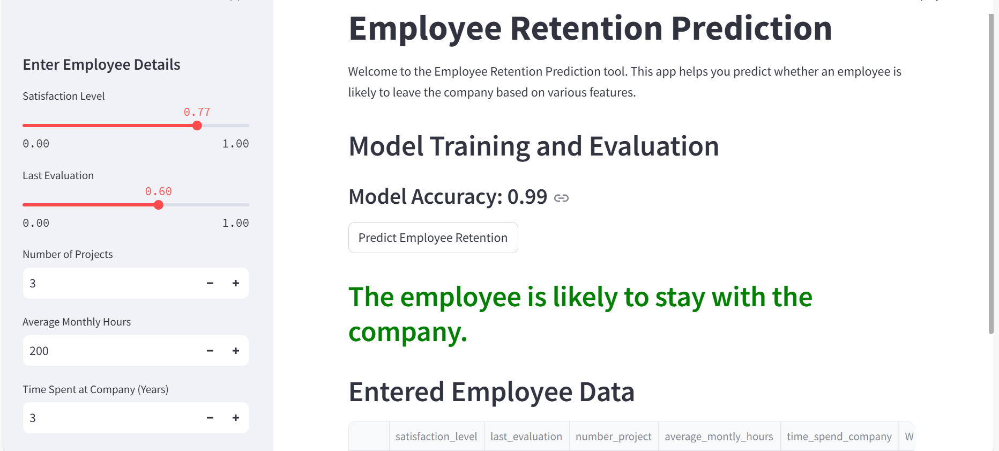
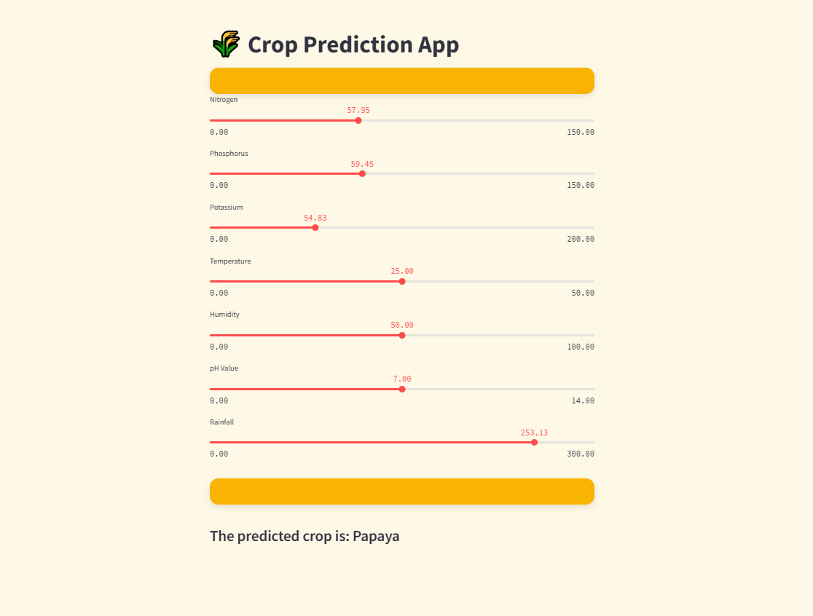
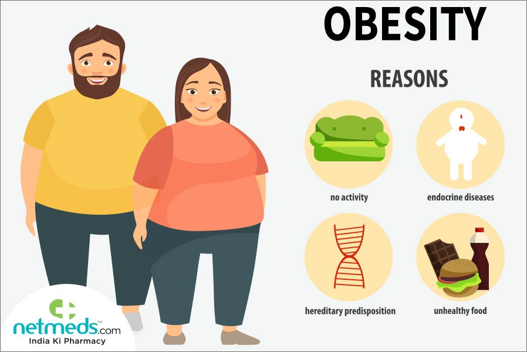
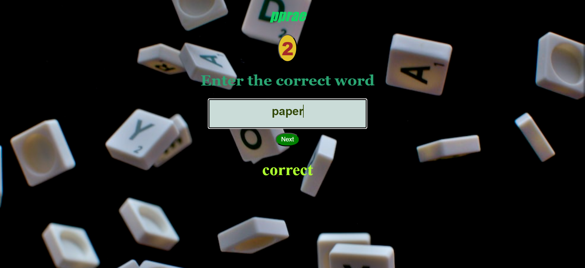

Employee Retention Using XGBoost

Utilizing machine learning techniques, specifically XGBoost classifier, I developed a model to predict employee retention. After thorough evaluation with GridSearchCV, the XGBoost classifier achieved an impressive accuracy of 98%, showcasing its robust predictive capability in identifying factors influencing employee turnover.
Predictive Analytics for Crop Suitability Using Machine Learning

Employing machine learning methodologies, I developed a robust crop prediction model using RandomForestClassifier. This model leverages diverse environmental features such as temperature, humidity, and rainfall etc.to accurately forecast optimal crop choices. Through rigorous evaluation, the RandomForestClassifier achieved an impressive accuracy of 98%, demonstrating its efficacy in agricultural decision support systems.
Personalized Obesity Risk Assessment Using ANN

Developed an Artificial Neural Network (ANN) model to predict obesity levels based on an individual's food habits, family history, and lifestyle choices. The model processes various inputs to provide personalized obesity risk assessments. This project demonstrates expertise in data preprocessing, feature engineering, model training, and evaluation. The ANN model achieved high accuracy and can assist in early intervention strategies for obesity management.
Data Analysis using python

I have undertaken several data analysis projects to derive meaningful insights from diverse datasets. In my analysis of Amazon's kitchen best sellers,
I identified key trends and factors driving sales, utilizing data visualization and statistical techniques.
Through a comprehensive analysis of Tesla's stock performance, I explored historical price trends, trading volumes, and market sentiment, applying different statistical methods.
Additionally, my analysis of students' spending habits examined expenditure categories, purchase frequency, and demographic influences, offering insights into financial behavior of students.
Word game

In this game a jumbled word is displyed.The player has to enter the correct word.The player has to attempt the game for 5 times. If the 5 answers given by player are correct then he wins the game and loses otherwise.
This was developed using HTML, CSS and Javascript.